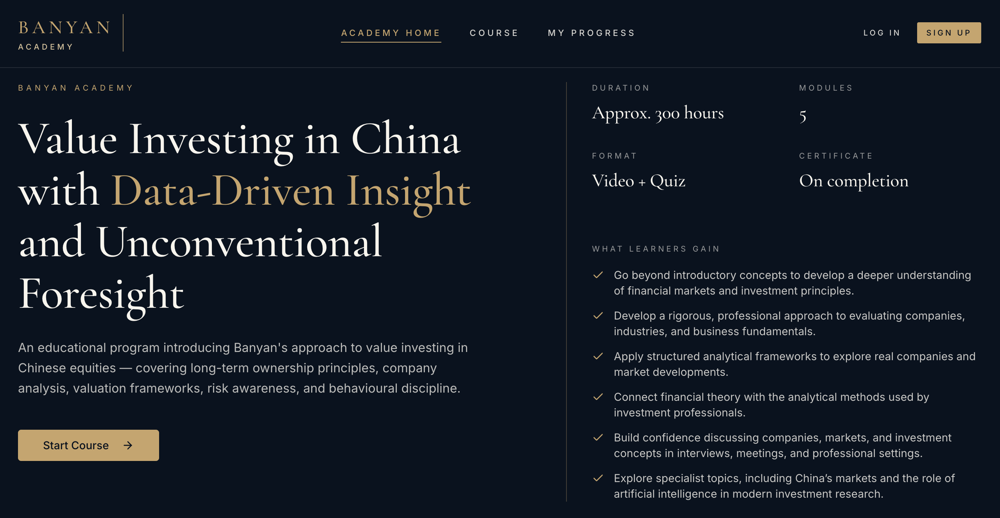
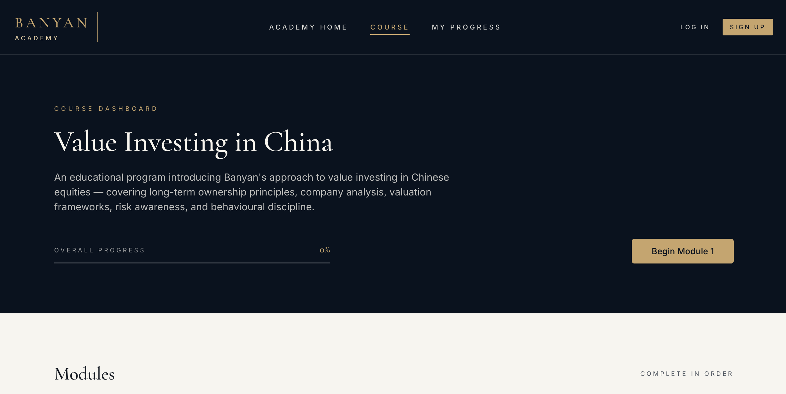
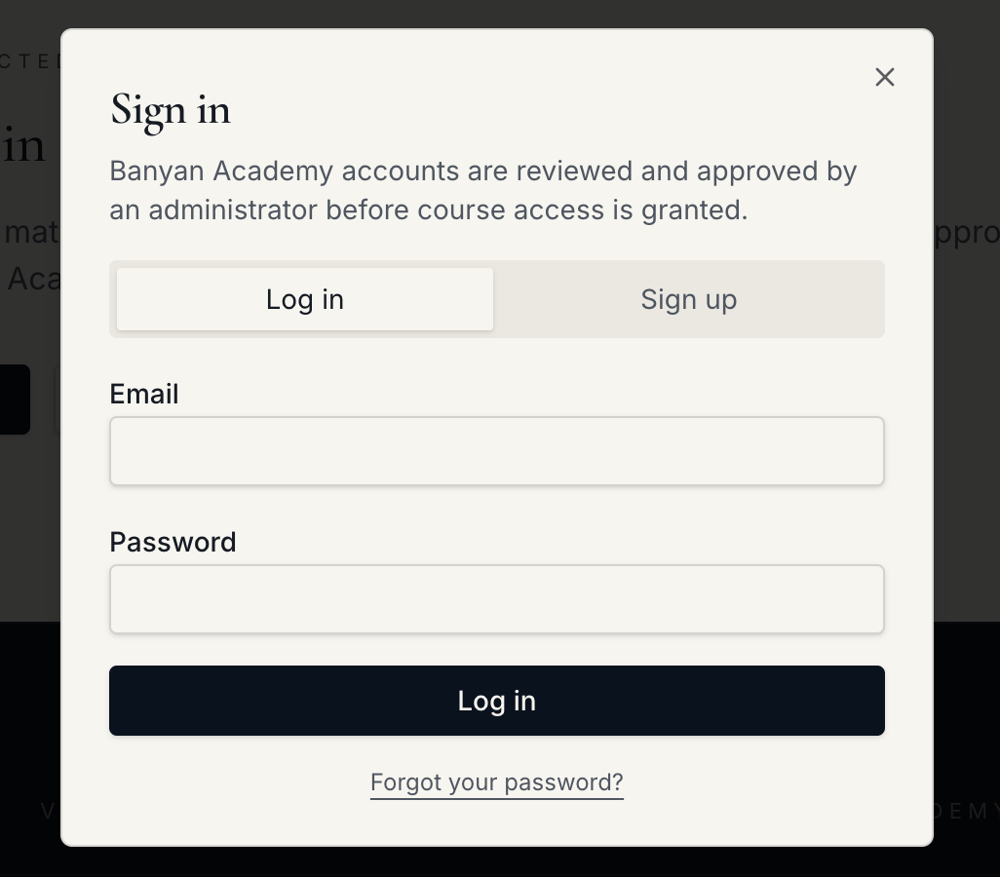
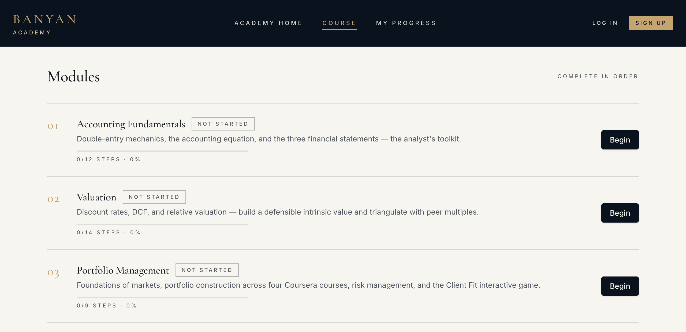

Banyan Academy
Overview
- The product
- A website that organizes Banyan's value investing and financial analysis educational program into a guided learning experience.
- My role
- Website design and heuristic evaluation
- Tools
- Lovable
- My contributions
- Built the initial website using company’s curriculum and content
- Organized the homepage, course navigation, account access, and progress displays
- Conducted a heuristic evaluation using Nielsen’s ten usability heuristics
- Prioritized improvements to access requirements, progress visibility, and module navigation
Banyan developed the curriculum and educational content. My work focused on how learners discover, access, and navigate that content.

Building the Initial Website
Using Lovable, I translated Banyan’s modules and information into a website connecting a public introduction with the learning experience. I organized module descriptions, created login and signup screens, and added completion and progress displays.
After establishing the initial website, I reviewed whether visitors could understand what was available, what required an approved account, and what to do next.

Evaluating the Experience
A review using Nielsen’s ten usability heuristics identified three top priorities for refinement.
Clarify access requirements
“Start Course” and “Begin” suggest immediate access, but sign-in and administrator approval appear only after selecting a module.
Usability heuristic: Match between system and the real world
Design change: Let visitors preview module descriptions and clearly display “Sign in to continue” before they access content. Explain the approved-account requirement upfront.

Make module prerequisites clear
Every module shows “Begin,” despite instructions to complete modules in order. Actual prerequisite enforcement was not tested.
Usability heuristic: Error prevention
Design change: For approved new learners, show “Begin” only for Module 1. Keep later modules locked until the preceding module is completed, with clear prerequisite labels. Public module descriptions remain visible.

Separate public and personal views
Signed-out visitors see “Overall Progress 0%,” “Not Started,” and step counts that resemble personal learner information.
Usability heuristic: Visibility of system status
Design change: Show visitors module and supplementary-resource summaries. Display personal progress and learning content only after approved sign-in.
Download Full Heuristic Evaluation →Design Changes
The next version will separate the public curriculum overview from the personal learning dashboard. Visitors will be able to preview module and supplementary-resource descriptions, with clear guidance that an approved account is required to access the content.
For approved learners, progress indicators and available actions will reflect their course status. Clearer, more readable buttons and labels will emphasize the next step.
View Website →